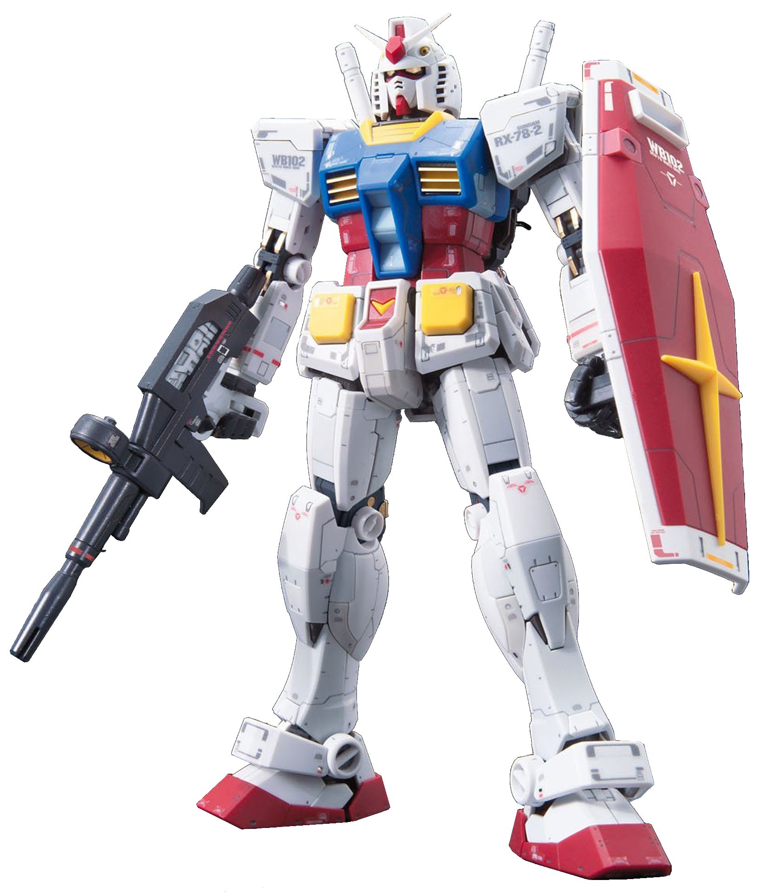
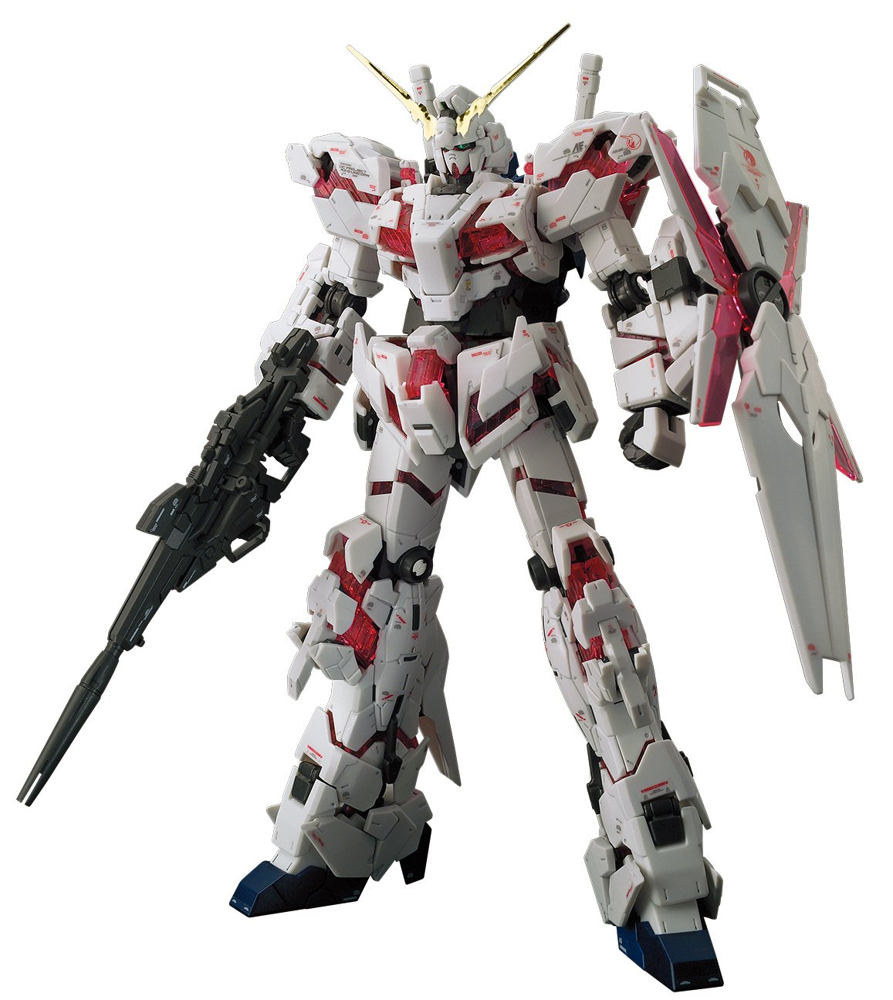
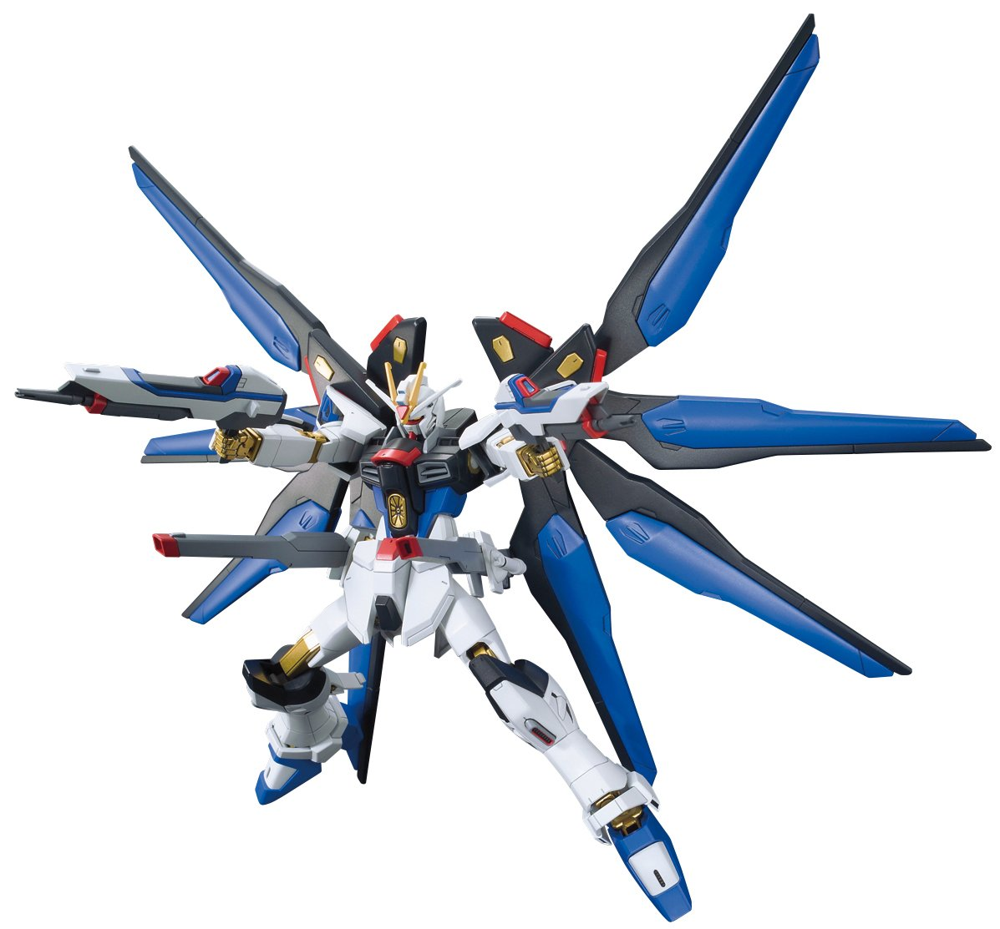
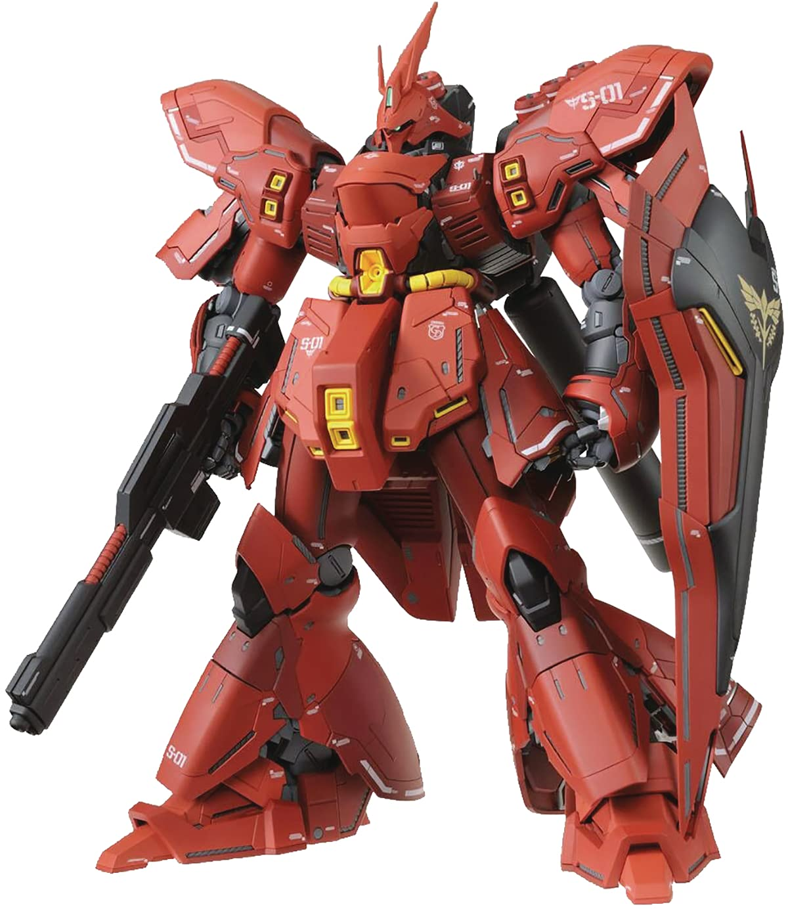
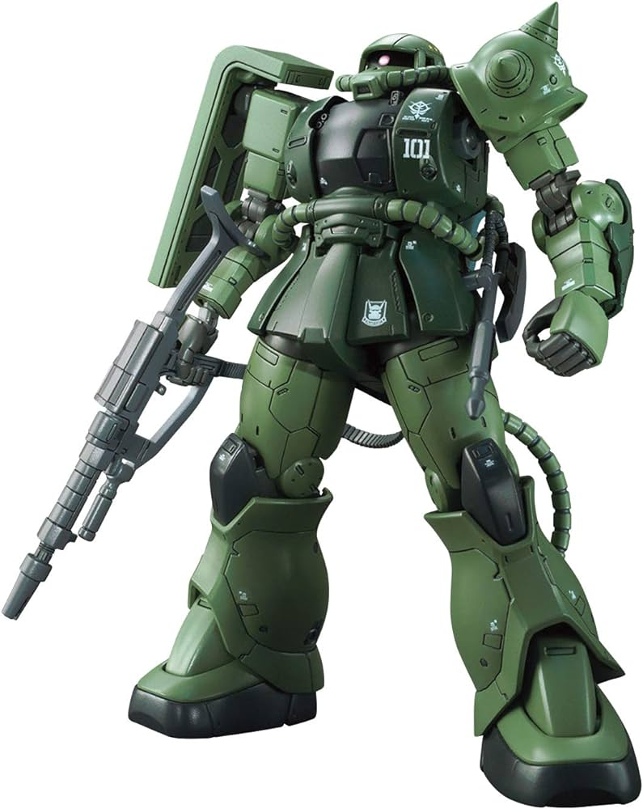
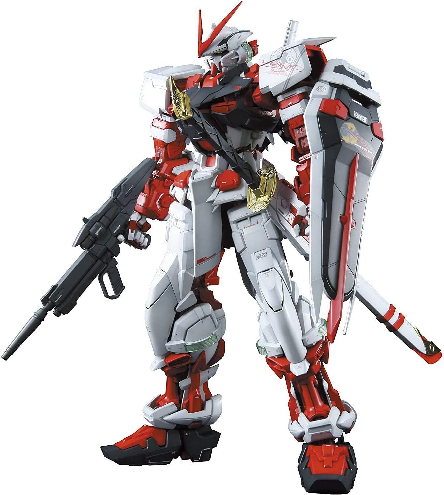
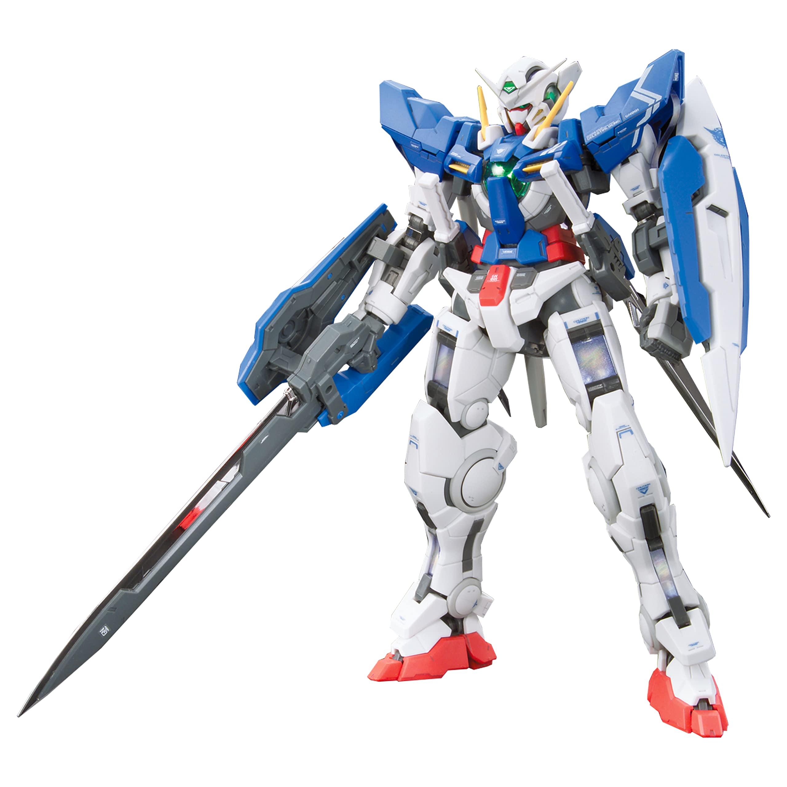

RX-78-2
The original Gundam and the most iconic Gunpla model. It is the main protagonist's mobile suit in the first Gundam series.

UNICORN GUNDAM
A highly detailed and articulated model with a unique transformation mechanism. It is the main mobile suit of the Gundam Unicorn series.

Strike Freedom
A powerful and flashy mobile suit with golden wings. It is the main mobile suit of Kira Yamato in Gundam Seed Destiny.

Sinanju
A red and gold mobile suit with a sleek design. It is the rival mobile suit of the Unicorn Gundam in the Gundam Unicorn series.

Sazabi
A bulky and menacing mobile suit with a red and purple color scheme. It is the main mobile suit of Char Aznable in Gundam: Char's Counterattack.

Wing Gundam Zero
A highly popular mobile suit with angelic wings and a fearsome appearance. It is the main mobile suit of Heero Yuy in Gundam Wing.

Zaku II
A classic mobile suit with a distinctive green color and iconic mono-eye. It is the main mobile suit of the Principality of Zeon in the original Gundam series.

Astray Red Frame
A sleek and agile mobile suit with a katana sword. It is the main mobile suit of Lowe Guele in Gundam SEED Astray.

Deathscythe Hell
A highly popular mobile suit with bat-like wings and a scythe. It is the main mobile suit of Duo Maxwell in Gundam Wing.

Exia
A highly detailed and articulated mobile suit with a unique blade-like design. It is the main mobile suit of Setsuna F. Seiei in Gundam 00.